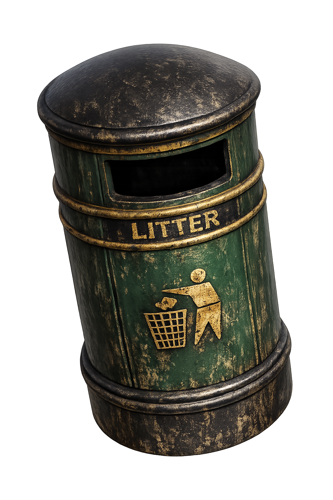

Sixside
The Enduring Spirit of the Mountains

Quick Services
About Sixside
Government & Agencies
View All Departments
Other Offices

此门户网站不存储任何数据。根据2133年《针对政府部门的隐私和网络安全 - 第2版本》法规，政府门户网站必须通过显现方式提示即将开始保存数据。The Enduring Spirit of the Mountains